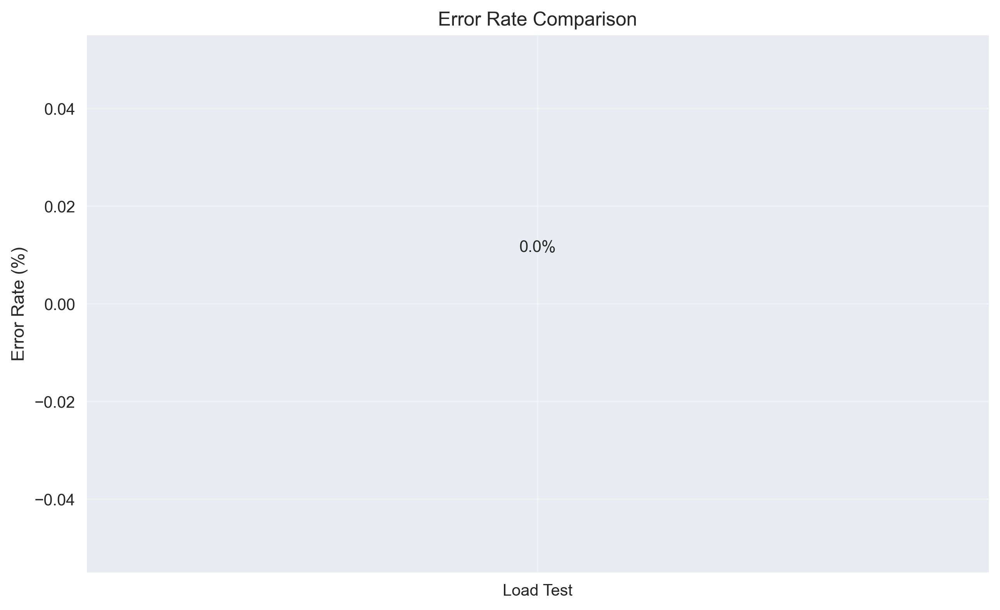

üìä Executive Summary
Test Execution Summary
Tests Executed: 1
Tests Passed: 0 (0.0%)
Overall Status: ❌ CRITICAL ISSUES
üìà Performance Charts
Response Time Comparison
Throughput Comparison
Error Rate Comparison
üîç Detailed Test Results
Load Test
| Metric | Value |
|---|---|
| Total Requests | 0 |
| Successful Requests | 0 |
| Failed Requests | 0 |
| Success Rate | 0.00% |
| Average Response Time | 0.00ms |
| Requests per Second | 0.00 |
üí° Recommendations
Performance Optimization Suggestions
- Low throughput detected - consider scaling or performance optimization
- Set up automated performance testing in CI/CD pipeline
- Monitor these metrics in production with alerting thresholds